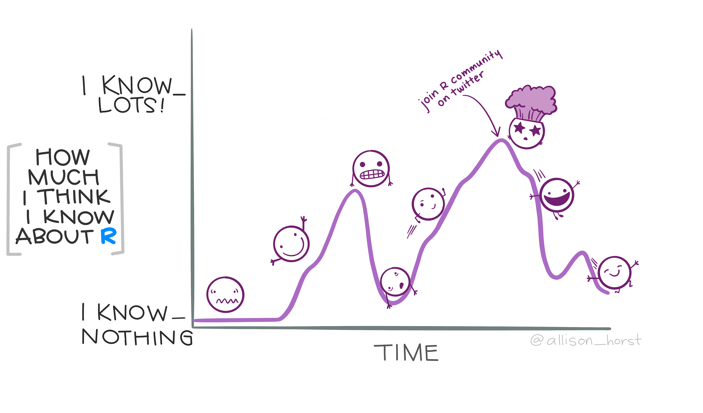

Packaging your R code
A minimal tutorial to guide you as you make your first (or hundredth) R package.
Introduction
In this tutorial will guide you through the creation your first R package using the {usethis} and {testthat} packages.
We’ll walk through the steps of setting up a new R package, adding functions and documentation, and creating tests to ensure your package is reliable and easy to use. Whether you’re a seasoned R programmer or just getting started, this tutorial will provide you with the tools you need to create your own R package and share your work with others.
What is a package
An R package is a collection of R functions, data, and documentation that can be easily shared with and installed by others.
Packages let you extending the functionality of the base R system, and are a fundamental unit of reproducible research. They can be created by anyone, and are easily distributable to others through the CRAN or GitHub.
The packages you create can be imported and used across multiple R scripts, making them an ideal way to share and use functions and data across projects. They can also be a good way to organize and structure your code, making it easier to test, document and maintain.
In this session I hope to convince you that if you can write an R function, you can write an R package.
20:80 Principle
Programming and package development are huge topics. In this session we will not even cover 20% of everything there is to know. However, by focusing on the most important and the most common aspects of package development we will rapidly get a minimal package up and running.
These basics will cover ~80% of everything you ever need to do during package development. Resources that were used to develop this tutorial, and which will support that last ~20%, are listed below.
R packages by Wickham and Bryan (Ch 2)
Writing R extensions CRAN

Tools to build a minimal R package
You will need:
- R and Rstudio
{devtools}{usethis}{testthat}{roxygen2}
This collection of software and R packages makes it easy to create, develop, document, test, check and share the packages you create.
For the “hardcore” folks you can do all of this by hand, but it is an absolute pain. These tools were developed for a reason.
Create a template directory
Once per package
usethis::create_package(path = "~/path/to_your_package/packageName")This should be:
- In your home directory, near where your other projects live;
- Not in an existing project, package or git repo;
- Not your R library where your packages are installed.
You can find out where your R packages are installed using .libpaths(). This is where install.packages() saves packages and where library() looks for them by default.
.libPaths()[1] "/Users/zakvarty/R_libraries/4.2/cran"
[2] "/Users/zakvarty/R_libraries/4.2/github"
[3] "/Users/zakvarty/R_libraries/4.2/personal"
[4] "/Library/Frameworks/R.framework/Versions/4.2/Resources/library"Note that yours will probably only return one entry. I’ve set things up to keep my R packages separated according to where they came from and so that they save to the CRAN folder by default, because this is where I get most of my packages.
What to call your package?
Naming things in hard.
Aim for something short, speakable. Snake, camel and pascal case are all acceptable, but aim for simplicity.
Since packages group code, the package name should describe the group in some way.
- Personal:
zvtools,broman,ralph - Colours:
rColourBrewer,PrettyCols,wesanderson - Data/Analysis type:
lubridate,sp,spatstat,ismev
I’ll follow the inspiration of {ismev} and name my minimal package eds, after the Effective Data Science module.
usethis::create_package(path = "~/Work/teaching/2022_data_science/eds")This will
- Create a new R project at the specified path,
- Creates a template package within that project directory,
- Opens the project in a new RStudio session.
It will also output something like the following in the console:
✔ Creating '/Users/zakvarty/Work/teaching/2022_data_science/eds/'
✔ Setting active project to '/Users/zakvarty/Work/teaching/2022_data_science/eds'
✔ Creating 'R/'
✔ Writing 'DESCRIPTION'Package: eds
Title: What the Package Does (One Line, Title Case)
Version: 0.0.0.9000
Authors@R (parsed):
* First Last <first.last@example.com> [aut, cre] (YOUR-ORCID-ID)
Description: What the package does (one paragraph).
License: `use_mit_license()`, `use_gpl3_license()` or friends to
pick a license
Encoding: UTF-8
Roxygen: list(markdown = TRUE)
RoxygenNote: 7.2.3
✔ Writing 'NAMESPACE'
✔ Writing 'eds.Rproj'
✔ Adding '^eds\\.Rproj$' to '.Rbuildignore'
✔ Adding '.Rproj.user' to '.gitignore'
✔ Adding '^\\.Rproj\\.user$' to '.Rbuildignore'
✔ Opening '/Users/zakvarty/Work/teaching/2022_data_science/eds/' in new RStudio session
✔ Setting active project to '<no active project>'
> usethis::create_package(path = "~/Work/teaching/2022_data_science/eds")
✔ Setting active project to '/Users/zakvarty/Work/teaching/2022_data_science/eds'Package: eds
Title: What the Package Does (One Line, Title Case)
Version: 0.0.0.9000
Authors@R (parsed):
* First Last <first.last@example.com> [aut, cre] (YOUR-ORCID-ID)
Description: What the package does (one paragraph).
License: `use_mit_license()`, `use_gpl3_license()` or friends to
pick a license
Encoding: UTF-8
Roxygen: list(markdown = TRUE)
RoxygenNote: 7.2.3If we now look in the “files” pane, we will see that this template is very different from what we recommended for a general project. Before we get familiar with the structure of a package directory, let’s first check our package with devtools::check(). This function forms a key part of the package development workflow and does several things.
- Updates documentation for the package and its contents
- Builds the package
- Checks the structure and content of the built package
- Returns errors, warnings and notes to guide your next steps.
You should check your package often during development. It takes a bit of time but it is much easier to correct a few points at a time than to diagnose why a huge package is not building.
Let’s take that advice and perform our first check.
devtools::check()We will see a lot of output as the function works its way through over 50 different checks. Finally, the output ends with only one warning, telling us that we have not specified a (standard) license for our project within the DESCRIPTION file.
...
── R CMD check results ───────────────────────────────────── eds 0.0.0.9000 ────
Duration: 5.3s
❯ checking DESCRIPTION meta-information ... WARNING
Non-standard license specification:
`use_mit_license()`, `use_gpl3_license()` or friends to pick a
license
Standardizable: FALSE
0 errors ✔ | 1 warning ✖ | 0 notes ✔The license file specifies how others may use our code. We will use the permissive MIT license, which we will add using another function from {usethis}. There are similar helper functions to add other licenses, which you can investigate further at choosealicense.com
The {usethis} helper function will add a markdown and plain text version of the license to our directory and reference these in the DESCRIPTION.
usethis::use_mit_license(copyright_holder = "Zak Varty")✔ Setting active project to '/Users/zakvarty/Work/teaching/2022_data_science/eds'
✔ Setting License field in DESCRIPTION to 'MIT + file LICENSE'
✔ Writing 'LICENSE'
✔ Writing 'LICENSE.md'
✔ Adding '^LICENSE\\.md$' to '.Rbuildignore'Our DESCRIPTION file should now look something like this.
Package: eds
Title: What the Package Does (One Line, Title Case)
Version: 0.0.0.9000
Authors@R:
person("First", "Last", , "first.last@example.com", role = c("aut", "cre"),
comment = c(ORCID = "YOUR-ORCID-ID"))
Description: What the package does (one paragraph).
License: MIT + file LICENSE
Encoding: UTF-8
Roxygen: list(markdown = TRUE)
RoxygenNote: 7.2.3While we are here we can fill out a few additional details. Where the template used argument order to define a person(), I have named these explicitly and removed the ORCID field.
The package Title should be short and in title case, while the package Description can be more detailed (a single paragraph) and split over multiple lines. Anything beyond the first line should be indented with four spaces (note: four spaces != 1 tab).
Package: eds
Title: Helper Functions for Effective Data Science 2022-23
Version: 0.0.0.9000
Authors@R:
person(
given = c("Zak","D"),
family = "Varty",
email = "z.varty@imperial.ac.uk",
role = c("aut", "cre"))
Description: A minimal example R package created during the first lives session
of Effective Data Science 2022-23. This countains a simple function to
calculate a moving average.
License: MIT + file LICENSE
Encoding: UTF-8
Roxygen: list(markdown = TRUE)
RoxygenNote: 7.2.3Let’s now check the package again and see that this has resolved our issues
devtools::check()...
✔ checking loading without being on the library search path ...
─ checking examples ... NONE
✔ checking for non-standard things in the check directory
✔ checking for detritus in the temp directory
── R CMD check results ─────────────────────────────────────────── eds 0.0.0.9000 ────
Duration: 5.5s
0 errors ✔ | 0 warnings ✔ | 0 notes ✔Fantastic! Our package has no errors, warnings or notes.
Adding a first function
The first function we will add to the package is the helper function I wrote to left- and right-pad a vector with NAs.
pad_with_NAs <- function(x, n_left, n_right){
c(rep(NA, n_left), x, rep(NA, n_right))
}To add this function to eds, we save it within the R/ directory. Until your package becomes large, it is good form to save each function in its own R file, named after the function. If the package becomes large, you can then think about refactoring your code to have one script for each family or group of functions.
We can create R/pad_with_NAs.R manually, or with a helper function from {usethis}. The helper function is useful because it will either open an existing R file or create one if it does not yet exist.
usethis::use_r("pad_with_NAs")
#• Modify 'R/pad_with_NAs.R'
#• Call `use_test()` to create a matching test fileWe can then paste our function definition into this file and save it.
pad_with_NAs <- function(x, n_left, n_right){
c(rep(NA, n_left), x, rep(NA, n_right))
}Try it out
To try out our padding function, we need to make it available in our current R session. One way we could do this is to call source(R/pad_with_NAs.R). This doesn’t match with our experience of loading a package though - it would make pad_with_NAs() appear in our global environment pane.
Instead, we can load all functions from the package using load_all(). This simulates the process of building, installing and loading {eds}, but is much faster than actually doing so. This speed difference becomes more and more beneficial as your package grows, allowing you to get an accurate sense of how users will experience your package even when you have functions that depend on each other or depend on functions from other packages.
devtools::load_all()
#ℹ Loading edspad_with_NAs(x = 1:5, n_left = 2, n_right = 1)[1] NA NA 1 2 3 4 5 NAAdding Documentation
It would be great if we had handy pop-ups to explain our function arguments and help pages to explain what our function does. We can add these using {roxygen2}. This package allows you to write markdown-like comments above function definitions that are automatically converted into documentation files in the man/ directory.
To add skeleton documentation, go to the menu and select Code > Insert Roxygen Skeleton. (This can also be done using the keyboard shortcut on that menu button when your cursor is inside the curly braces of the function.)
Now our function padding function file should look something like this:
#' Title
#'
#' @param x
#' @param n_left
#' @param n_right
#'
#' @return
#' @export
#'
#' @examples
pad_with_NAs <- function(x, n_left, n_right){
c(rep(NA, n_left), x, rep(NA, n_right))
}Filling out the relevant fields, we get something like this.
#' Add NAs to a vector
#'
#' @param x Vector to which NAs will be added.
#' @param n_left Number of NAs to add before x.
#' @param n_right Number of NAs to add after x.
#'
#' @return A vector containing x with the requested number of NA values before and after.
#'
#' @export
#' @examples
#' pad_with_NAs(1:5, n_left = 0, n_right = 3)
#' pad_with_NAs(c("spider", "mouse", "cat", "dog"), n_left = 1, n_right = 2)
#'
pad_with_NAs <- function(x, n_left, n_right){
c(rep(NA, n_left), x, rep(NA, n_right))
}The final step is to save these changes and then convert the comments to documentation using document().
devtools::document()
# ℹ Updating eds documentation
# ℹ Loading eds
# Writing pad_with_NAs.RdThis will allow you to preview the help file for pad_with_NAs(). I say preview here, rather than view because the documentation really only gets made when you build the package (which also adds things like links between help files and a package index). This is what the “Rendering development documentation …”” message is trying to remind you.
?pad_with_NAs
# ℹ Rendering development documentation for "pad_with_NAs"Install your package
Now that we have a minimum viable package with a single function, let’s install the eds package. We do this using devtools::install().
?devtools::install()We can now load and use {eds} just like any other package.
library(eds)
animals <- c("spider", "mouse","cat")
pad_with_NAs(animals, n_left = 1,n_right = 0)[1] NA "spider" "mouse" "cat" Aside on setting installation path
If, like me, you want to install this to a non-default location then you can do this using withr::with_libpaths().
I would like to install this to my sub-folder for personal R packages, which is the third element of my .libPaths vector.
.libPaths()[1] "/Users/zakvarty/R_libraries/4.2/cran"
[2] "/Users/zakvarty/R_libraries/4.2/github"
[3] "/Users/zakvarty/R_libraries/4.2/personal"
[4] "/Library/Frameworks/R.framework/Versions/4.2/Resources/library"I can do this by using {withr} to execute the same code but with my library paths temporarily replaced by only a single path, pointing to the personal packages sub-folder.
withr::with_libpaths(new = .libPaths()[3], code = devtools::install())This is a bit of a handful to type repeatedly, so I’ve made a wrapper function for it in my eds package: eds::install_local().
Functions with dependencies
Within package dependencies
The excellent thing about having a functions in a package is that they are all loaded together and don’t clutter the workspace.
I created pad_with_NAs() as a helper function for rolling_average(). Whenever I loaded rolling_average() using src(), I had to remember to also source the padding function. Putting both functions in a package saves this worry. It also keeps my working environment focused on the problem I am solving (the data I want to smooth) rather than the tools I am using to solve that problem (functions and their helpers).
Between package dependencies
We’ve seen that functions within a package recognise each other and that we can make functions within our package available to users using the @export Roxygen tag. (It did this by adding export(pad_with_NAs) to the NAMESPACE file. Check if you don’t believe me.)
What happens if we want to use another package’s functions in our package? We have three options, depending how many functions we want to use and how often we use them.
Run
usethis::use_package("package_name")to declare a dependency in the DESCRIPTION file. Then use the::notation to clearly specify the namespace (package) of the function you want to use. (I’ve been doing this same thing above to make it clear to you that some function are fromdevtoolsand others are fromwithr.)In the Roxygen section of your function, use
#' @importFrom pkg fun1 fun2- if you prefer this over using::. This can be useful if you use a couple of functions frequently to keep your code shorter and easier to read.In the Roxygen section of your function,
#' @import pkg- this imports all functions from a package and should be used very sparingly because it makes your package bulkier and increases the chance of namespace conflicts (where there is a function of the same name in two loaded packages).
If you are submitting your package to CRAN you need to delcalre all ALL other packages your code depends on. This includes the packages that come as standard with R (other than {base}), for example {stats}, {MASS}, and {graphics}.
Example imports
usethis::use_package("stats")#' Simulate rounded Gaussian random variates
#'
#' @param n Number of observations. If length(n) > 1, the length is taken to be the number required.
#' @param mu Vector of means.
#' @param sigma Vector of standard deviations.
#' @param digits Integer indicating the number of decimal places to be used in rounding. Negative values are used to round to a power of ten, so for example `digits = -2` rounds to the nearest hundred. (See 'Details' of `base::round()`).
#'
#' @return Vector of Gaussian random variates, rounded to to specified number of decimal places.
#' @export
#'
#' @examples
#' rnorm_rounded(n = 10)
rnorm_rounded <- function(n, mu = 0, sigma = 1, digits = 0){
raw_values <- stats::rnorm(n, mean = mu, sd = sigma)
rounded_values <- base::round(raw_values, digits)
return(rounded_values)
}We do not need to explicitly declare that round() is from base, or include in in a list of imported functions.
#' Simulate rounded Gaussian random variates
#'
#' @param n Number of observations. If length(n) > 1, the length is taken to be the number required.
#' @param mu Vector of means.
#' @param sigma Vector of standard deviations.
#' @param digits Integer indicating the number of decimal places to be used in rounding. Negative values are used to round to a power of ten, so for example `digits = -2` rounds to the nearest hundred. (See 'Details' of `base::round()`).
#'
#' @return Vector of Gaussian random variates, rounded to to specified number of decimal places.
#'
#' @importFrom stats rnorm
#' @export
#"
#' @examples
#' rnorm_rounded(n = 10)
rnorm_rounded <- function(n, mu = 0, sigma = 1, digits = 0){
raw_values <- rnorm(n, mean = mu, sd = sigma)
rounded_values <- round(raw_values, digits)
return(rounded_values)
}Importing the entire stats package would be overkill when we use only one function.
#' Simulate rounded Gaussian random variates
#'
#' @param n Number of observations. If length(n) > 1, the length is taken to be the number required.
#' @param mu Vector of means.
#' @param sigma Vector of standard deviations.
#' @param digits Integer indicating the number of decimal places to be used in rounding. Negative values are used to round to a power of ten, so for example `digits = -2` rounds to the nearest hundred. (See 'Details' of `base::round()`).
#'
#' @return Vector of Gaussian random variates, rounded to to specified number of decimal places.
#'
#' @import stats
#' @export
#"
#' @examples
#' rnorm_rounded(n = 10)
rnorm_rounded <- function(n, mu = 0, sigma = 1, digits = 0){
raw_values <- rnorm(n, mean = mu, sd = sigma)
rounded_values <- round(raw_values, digits)
return(rounded_values)
}An import exception
An exception to the import procedure is the pipe from {magrittr}
You may want to import this to pipe within your function definitions, but having magritr::'%>%' in your code looks a right mess and defeats the readability benefits of piping.
Instead, we have to take two steps.
usethis::use_pipe() # Creates R/utils-pipe.R and adds magrittr to DESCRIPTION
devtools::document() # Adds the pipe to your package's NAMESPACEAdding Tests
We can also add tests to the functions within our package. These tests will stay in a new directory called tests/ and will be run each time the package is built. This helps us to ensure that they currently work as we expect and that we do not break them when making alterations in the future.
To write and keep track of these tests, we will use {testthat}. To get started we will use the helper function usethis::use_testthat() to:
- create
tests/testthat - create
tests/testthat.R - add
{testthat}to the Suggests field of our package.
This needs to be done only once per package.
usethis::use_testthat()
# ✔ Adding 'testthat' to Suggests field in DESCRIPTION
# ✔ Setting Config/testthat/edition field in DESCRIPTION to '3'
# ✔ Creating 'tests/testthat/'
# ✔ Writing 'tests/testthat.R'
# • Call `use_test()` to initialize a basic test file and open it for editing.Each of our files of tests will live in the tests/testthat subdirectory in a file named after the function. We can create this file of tests by running usethis::use_test() while we have any of our package functions open. This will either open or create the relevant text file for us to edit or populate.
This needs to be done (at least) once for each function that we want to write tests for. Let’s focus on writing tests for pad_with_NAs().
With R/pad_with_NAs.R open, run usethis::use_test() to create and open a file to store the tests. Note that the naming convention here is different to our previous convention.
usethis::use_test()
# ✔ Writing 'tests/testthat/test-pad_with_NAs.R'
# • Modify 'tests/testthat/test-pad_with_NAs.R'This will have a dummy test included by default.
test_that("multiplication works", {
expect_equal(2 * 2, 4)
})Let’s change this to match one of our examples and add another test to match the other example. To try out these tests as you write them, you’ll want to attach {testthat} to the current R session and make your package function available with load_all().
library(testthat)
devtools::load_all()
# ℹ Loading edsIf you then try running the dummy test you should get something like:
test_that("multiplication works", {
expect_equal(2 * 2, 4)
})
# Test passed 😀We can replace this by some simple checks that the funciton behaves as expected when given examples we wrote in the documentation and when we pad with zero NAs.
test_that("padding by 0 works", {
expect_equal(pad_with_NAs(x = 1:3, n_left = 1, n_right = 0), c(NA, 1, 2, 3))
expect_equal(pad_with_NAs(x = 1:3, n_left = 0, n_right = 1), c(1, 2, 3, NA))
})
test_that("examples work", {
expect_equal(
object = pad_with_NAs(1:5, n_left = 0, n_right = 3),
expected = c(1:5, NA, NA, NA))
expect_equal(
object = pad_with_NAs(c("spider", "mouse", "cat", "dog"), n_left = 1, n_right = 2),
expected = c(NA, "spider", "mouse", "cat", "dog", NA)
)
})We can run these tests individually, as we did before, or we can run all test in the file using the testthat::test_file().
testthat::test_file("tests/testthat/test-pad_with_NAs.R")
# [ FAIL 1 | WARN 0 | SKIP 0 | PASS 3 ]
#
# ── Failure (test-pad_with_NAs.R:10): examples work ─────────────────────────────
# pad_with_NAs(...) (`actual`) not equal to
# c(NA, "spider", "mouse", "cat", "dog", NA) (`expected`).
#
# `actual[4:7]`: "cat" "dog" NA NA
# `expected[4:6]`: "cat" "dog" NA
#
# [ FAIL 1 | WARN 0 | SKIP 0 | PASS 3 ]From the test output, we can see that three of the tests are passing but one is failing. Using the additional output, we can figure out that I forgot the second NA in the test of the string example. Let’s add that back in.
test_that("padding by 0 works", {
expect_equal(pad_with_NAs(x = 1:3, n_left = 1, n_right = 0), c(NA, 1, 2, 3))
expect_equal(pad_with_NAs(x = 1:3, n_left = 0, n_right = 1), c(1, 2, 3, NA))
})
test_that("examples work", {
expect_equal(
object = pad_with_NAs(1:5, n_left = 0, n_right = 3),
expected = c(1:5, NA, NA, NA))
expect_equal(
object = pad_with_NAs(c("spider", "mouse", "cat", "dog"), n_left = 1, n_right = 2),
expected = c(NA, "spider", "mouse", "cat", "dog", NA, NA)
)
})We can also add some input checks to the function, in case the user tries to do something unexpected. We’ll add input checks to cover two cases where the user tries to:
- use negative indexing to pad inwards with NAs;
- pad an object that is not a vector.
To do this we will use the stopifnot() function. This is a useful shorthand to stop() function execution and return an error message based on a logical statement. For more detailed control of the error message or for less serious failings, which require only a warning() or a message(). Learn more about these in the Advanced R conditions chapter.
#' Add NAs to a vector
#'
#' @param x Vector to which NAs will be added.
#' @param n_left Number of NAs to add before x.
#' @param n_right Number of NAs to add after x.
#'
#' @return A vector containing x with the requested number of NA values before and after.
#'
#' @export
#' @examples
#' pad_with_NAs(1:5, n_left = 0, n_right = 3)
#' pad_with_NAs(c("spider", "mouse", "cat", "dog"), n_left = 1, n_right = 2)
#'
pad_with_NAs <- function(x, n_left, n_right){
# Input checks
stopifnot(n_left >= 0)
stopifnot(n_right >= 0)
stopifnot(class(x) %in% c("character", "complex", "integer", "logical", "numeric", "factor"))
# Function Body
c(rep(NA, n_left), x, rep(NA, n_right))
}We can then add additional tests to confirm that we get errors, warnings or messages where we expect them. As our test file grows, we might want to organise our tests according to their purpose.
# Typical Behaviour
test_that("examples work", {
expect_equal(
object = pad_with_NAs(1:5, n_left = 0, n_right = 3),
expected = c(1:5, NA, NA, NA))
expect_equal(
object = pad_with_NAs(c("spider", "mouse", "cat", "dog"), n_left = 1, n_right = 2),
expected = c(NA, "spider", "mouse", "cat", "dog", NA, NA)
)
})
# Edge Cases
test_that("padding by 0 works", {
expect_equal(pad_with_NAs(x = 1:3, n_left = 1, n_right = 0), c(NA, 1, 2, 3))
expect_equal(pad_with_NAs(x = 1:3, n_left = 0, n_right = 1), c(1, 2, 3, NA))
})
# Malformed Inputs
test_that("negative padding produces error", {
expect_error(pad_with_NAs(x = 1:5, n_left = -1, n_right = 1))
expect_error(pad_with_NAs(x = 1:5, n_left = 1, n_right = -1))
})
test_that("giving non-vector x produces error", {
matrix_input <- diag(1:4)
list_input <- x = list(1:5, "cat")
expect_error(pad_with_NAs(x = matrix_input, n_left = 1, n_right = 1))
expect_error(pad_with_NAs(x = list_input, n_left = 1, n_right = 1))
})We can continue to run test files individually, but they will all be run when we call devtools::check().
testthat::test_file("tests/testthat/test-pad_with_NAs.R")
# [ FAIL 0 | WARN 0 | SKIP 0 | PASS 8 ]Wrapping up
To wrap up let’s run one last check and install the package.
devtools::check()
# ─ R CMD check results ─────────────────────────────────── eds 0.0.0.9000 ────
# Duration: 12.1s
#
# 0 errors ✔ | 0 warnings ✔ | 0 notes ✔Congratulations, you’ve created your first R package!
You should now have a solid understanding of how to set up a new R package, add functions and documentation by using {usethis} and {devtools}. You also know how to use {testthat} and {roxygen22} to create tests to ensure your package is reliable and easy to use.
You should now be able to create your own R package and might want to consider using git to track its development and sharing it with others on Github.
Remember, creating an R package is an iterative process, and it may take several rounds of testing and editing before you are satisfied with the final product. But with a little patience and persistence, you’ll be able to create a package that you and others can use with confidence.
Follow up Tasks
- Add input checks and tests for my rolling_mean function.
- Add your own function for finding the geometric mean of a vector.
- Add a readme file for your package, using
usethis::use_readme_rmd()and the relevant section of the R packages book for guidance.
–>
Reuse
Citation
@online{varty2023,
author = {Zak Varty},
title = {Packaging Your {R} Code},
date = {2023-01-19},
url = {https://www.zakvarty.com/blog/2023-01-16-minimal-R-package},
langid = {en}
}